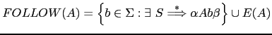
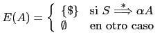
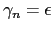

Nótese que si
 y
es porque existe una derivación
. ¿Que terminales podemos
legalmente encontrarnos cuando estamos en la subrutina
y
es porque existe una derivación
. ¿Que terminales podemos
legalmente encontrarnos cuando estamos en la subrutina A?
Consideremos una derivación desde el símbolo de arranque en la que se
use la producción
 . Dicha derivación forzosamente
tendrá la forma:
. Dicha derivación forzosamente
tendrá la forma:
Cualquier terminal
que pueda aparecer en una derivación desde
el símbolo de arranque inmediatamente a continuación de la variable  es susceptible de ser visto
cuando se esta analizando
es susceptible de ser visto
cuando se esta analizando  y se aplicó
y se aplicó
 con
.
Esto nos lleva a la definición del conjunto
con
.
Esto nos lleva a la definición del conjunto  como conjunto
de terminales que pueden aparecer a continuación de
como conjunto
de terminales que pueden aparecer a continuación de  en una derivación
desde el símbolo de arranque:
en una derivación
desde el símbolo de arranque:

donde

EOI).
Si
dado que los conjuntos
 han de ser disjuntos para que un analizador predictivo APDR funcione, sólo una parte derecha
puede contener la palabra vacía en su
han de ser disjuntos para que un analizador predictivo APDR funcione, sólo una parte derecha
puede contener la palabra vacía en su  . Supongamos que es
.
Podemos reformular la construcción del procedimiento para la variable
. Supongamos que es
.
Podemos reformular la construcción del procedimiento para la variable  siguiendo
este seudocódigo:
siguiendo
este seudocódigo:
sub A {
if ($lookahead in FIRST(gamma_1)) { imitar gamma_1 }
elsif ($lookahead in FIRST(gamma_2)) { imitar gamma_2 }
...
else ($lookahead in FIRST(gamma_n) or $lookahead in FOLLOW(A)) { imitar gamma_n }
}
Un caso particular de
es que

. En tal caso, y como
es obvio, el significado de imitar gamma_n
es equivalente a ejecutar una sentencia vacía.